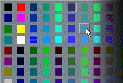

IconMenu Control Color Picker Demonstration (12K)
IconMenu Control Color Picker Demonstration (12K)
 IconMenu VB6 Color Picker Demonstration (11K)
IconMenu VB6 Color Picker Demonstration (11K)
 10 Jan 1999
10 Jan 1999
First Posted
 vbAccelerator ImageList Control and Class v2.0
vbAccelerator ImageList Control and Class v2.0

Using The IconMenu Control To Create a Colour Picker
Demonstrates using the new caption shortcuts in the IconMenu control to build a unique menu
This project demonstrates how to use the new Caption shortcuts in the Icon Menu control to create multiple column menus which don't have separators. By adding the hat character ("^") to the beginning of a menu caption, the Icon Menu control will start a new menu column without a separator line. (Use the pipe "|" character to create a break with a separator).
In addition to this, the project shows how to programmatically create a web-safe colour palette, add the colours to a bitmap and then load the bitmap into a vbAccelerator Image List.
This probably isn't the fastest, most memory efficient or smoothest way to create a colour picker in your application. Elsewhere on the site there is a colour picker control for that! However the project does demonstrate the flexibility of the Icon Menu control and how it handles large numbers of menu items.